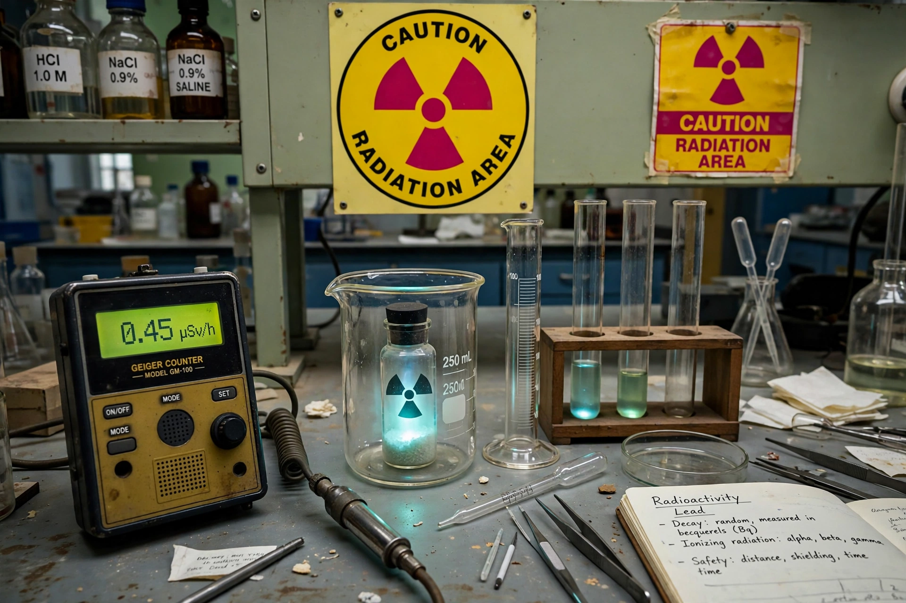

Radioactivity
From Wikipedia, the free encyclopedia

[Image: Radiation trefoil sign and a faintly glowing radioactive sample in laboratory glassware]Radiation trefoil sign and a faintly glowing radioactive sample in laboratory glassware
Radioactive decay (also known as nuclear decay, radioactivity or nuclear radiation) is the process by which an unstable atomic nucleus loses energy by radiation. A material containing unstable nuclei is considered radioactive. The three main types of decay are alpha decay, beta decay and gamma decay, all of which involve emitting particles or electromagnetic radiation from the nucleus.
Radioactivity was discovered in 1896 by the French scientist Henri Becquerel, who found that uranium salts fogged photographic plates even in darkness. Marie Curie and Pierre Curie went on to discover the radioactive elements polonium and radium, and Marie Curie coined the term radioactivity. Ernest Rutherford classified radiation into alpha, beta and gamma types and developed the concept of half-life.
Decay is a random process at the level of single atoms: it is impossible to predict when a particular atom will decay, but a large collection decays at a predictable overall rate characterised by its half-life. The SI unit of radioactivity is the becquerel (Bq), one decay per second; the older curie (Ci) is still in use. Radioactive materials occur naturally — including uranium, thorium and their decay products such as radon — and are also produced artificially in nuclear reactors and particle accelerators. Ionising radiation can damage living tissue, and exposure is regulated internationally, symbolised by the black-and-yellow trefoil warning sign.
History
Becquerel's 1896 experiments with uranium salts and photographic plates, initially investigating phosphorescence, showed that uranium emitted penetrating rays spontaneously. The Curies' work processing tonnes of pitchblende isolated polonium (named for Marie Curie's native Poland) and radium in 1898. Rutherford, working in Montreal and Manchester, distinguished alpha and beta rays, proposed the nuclear model of the atom, and with Frederick Soddy explained radioactivity as the spontaneous transformation of one element into another — a finding that overturned the ancient idea of immutable elements.
In the 1930s, Irène and Frédéric Joliot-Curie produced artificial radioactivity by bombarding stable elements with alpha particles, and Enrico Fermi's neutron bombardment experiments paved the way to the discovery of nuclear fission by Otto Hahn, Fritz Strassmann, Lise Meitner and Otto Frisch in 1938.
Types of decay
In alpha decay an unstable nucleus emits an alpha particle — two protons and two neutrons, identical to a helium-4 nucleus — reducing its atomic number by two. In beta decay a neutron is converted into a proton (or vice versa) with the emission of an electron (or positron) and a neutrino. Gamma decay is the emission of high-energy photons from an excited nucleus, changing neither its mass nor its atomic number. Others include neutron emission, spontaneous fission, and electron capture.
Measurement and units
Activity is measured in becquerels (decays per second). Absorbed dose is measured in grays (Gy), and dose equivalent — weighted for biological effect — in sieverts (Sv). Instruments such as the Geiger counter, scintillation detectors and dosimeters are used to detect and measure radiation.
Applications and hazards
Radioactive isotopes are used in medicine (radiotherapy and diagnostic tracers), industry (thickness gauges, smoke detectors containing americium-241), archaeology (radiocarbon dating), and power generation in nuclear reactors. The same ionising properties make radiation a health hazard: acute high doses cause radiation sickness, and prolonged exposure increases cancer risk, which is why handling, transport and disposal of radioactive material are tightly controlled.
See also
Alpha decay · Half-life · Marie Curie · Ernest Rutherford · Nuclear fission · Geiger counter · Uranium · Radiocarbon dating · Henri Becquerel · Radium